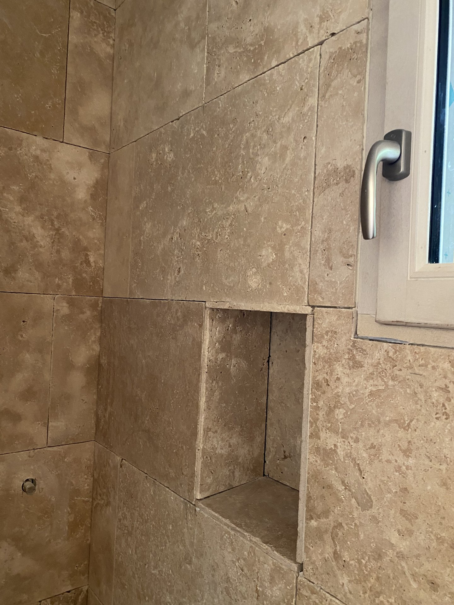
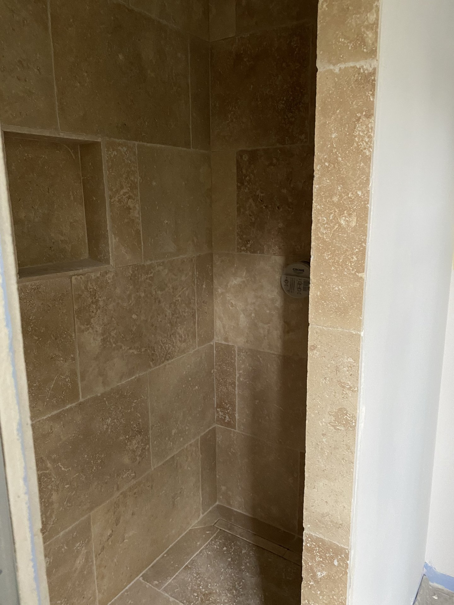
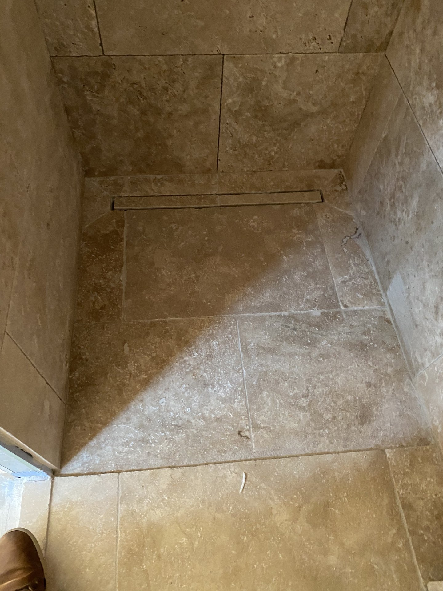

Douche à l’italienne en
travertin
Oportunum est, ut arbitror, explanare nunc causam, quae ad exitium praecipitem Aginatium inpulit iam inde a priscis maioribus nobilem, ut locuta est pertinacior fama. nec enim super hoc ulla documentorum rata est fides.exitium praecipitem Aginatium inpulit iam inde a priscis maioribus nobilem, ut locuta est pertinacior fama. nec enim



